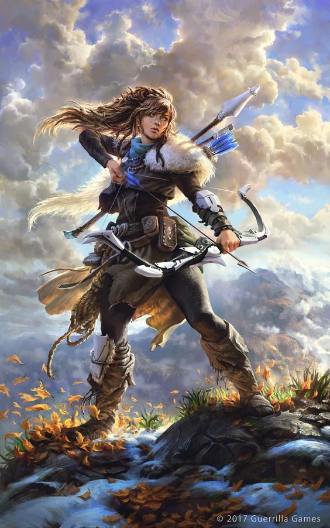

Altira is Amar's greatest huntress. She is perhaps as far as any human can go along this path.

Character Sheet
| Name | Altira |
|---|---|
| Type | Hunter |
| Area | Amaronir |
| Sex | Female |
| Age | 41 |
| Height | 176 cm |
| Weight | 78 kg |
| SIZE | 3.5 |
| Social Status | MC |
Characteristics
- BODY: 3
- MIND: 2
- SPIRIT: 2
Attributes
BODY
- Strength: 5 (Total with BODY: 8) - legacy Strength 10
- Endurance: 5 (Total with BODY: 8) - legacy Endurance 15
- Athletics: 5 (Total with BODY: 8) - legacy Coordination 18
- Melee Combat: 5
- Missile Combat: 5
- Sleight: 3
MIND
- Intelligence: 2 (Total with MIND: 4) - legacy Learning 6
- Awareness: 5 (Total with MIND: 7) - legacy Awareness 15
- Nature Knowledge: 4
- Practical Knowledge: 5
- Willpower: 4
SPIRIT
- Casting: 2
- Attunement: 3 (Total with SPIRIT: 5) - legacy Magical Aptitude 8
- Worship: 5 (Anashina - Protector/Priest level 16)
Key Skills (with Totals)
BODY → Athletics
- Balance: 4 (Total: 12)
- Climb: 4 (Total: 15)
- Hide: 7 (Total: 18)
- Move Quietly: 7 (Total: 18)
- Ride: 3 (Total: 14)
- Swim: 0 (Total: 10)
- Tumble: 2 (Total: 13)
BODY → Melee Combat
- Dodge: 7 (Total: 15)
- Whip/Buckler: 9 (Total: 17)
- Staff: 6 (Total: 14)
- Unarmed: 6 (Total: 14)
BODY → Missile Combat
- Bow (Tira, +4): 14 (Total: 22)
BODY → Sleight
- Sleight: 4 (Total: 10)
- Disarm Traps: 8 (Total: 13)
MIND → Awareness
- Tracking: 8 (Total: 15)
- Sense Animal Behavior: 8 (Total: 13)
MIND → Nature Knowledge
- Animal Lore: 4 (Total: 10)
- Plant Lore: 1 (Total: 7)
- Medical Lore: 0 (Total: 6)
MIND → Practical Knowledge
- Trapping: 11 (Total: 18)
- Fishing: 7 (Total: 14)
- Tanning: 3 (Total: 10)
- Weather Lore: 0 (Total: 3)
MIND → Social Knowledge
- Literacy: 0 (Total: 2)
- Spoken Language: 5 (Total: 7)
Combat & Equipment
- Body Points (BP): 12 (SIZE 3.5 × 2 + Fortitude/3)
- Damage Bonus (DB): 4 ((SIZE + Wield Weapon)/3)
- Magick Defense (MD): 7 ((Mental Fortitude + Attunement Self)/3)
- Encumbrance: 10
- Armor: Leather (AP 2)
- Wealth: 2800
Weapons
| Weapon | Skill | I/SR | Off | Def | Dam | HP | Range |
|---|---|---|---|---|---|---|---|
| Whip/Buckler | 17 | 2 | 17 | 20 | 1 | 6 | - |
| Staff | 14 | 2 | 14 | 19 | 4 | 7 | - |
| Unarmed | 14 | 5 | 12 | 13 | 0 | - | - |
| Bow (Tira, +4) | 22 | 1 | 22 | - | 4 | - | 50/230 |
Worship
- Deity: Anashina (Protector/Priest level 16)
- SPIRIT → Worship → Anashina: 14